Da che parte sta chi guarda
Tempo, identità e responsabilità dell’interpretazione
Testo integraleEnglish note
Il potere di decidere, i luoghi a cui si torna, il tempo che cambia un volto. Scritti di Alessandro Gentili.
Tempo, identità e responsabilità dell’interpretazione

Le piazze, il potere e la libertà di decidere ciò che verrà

Dai fondi europei alle graduatorie regionali, il difficile incontro fra lavoro, impresa e responsabilità pubblica.

Tempo politico, costi rinviati e il deficit di rappresentanza del futuro.

Una diffida del 1780, le migrazioni del Novecento e la lunga storia della Festa della Madonna della Speranza a Castelletta.

L’Europa si arma, ma non ha ancora deciso quale ordine vuole difendere.

Intelligenza artificiale, lavoro e scomparsa del tempo necessario a diventare capaci.
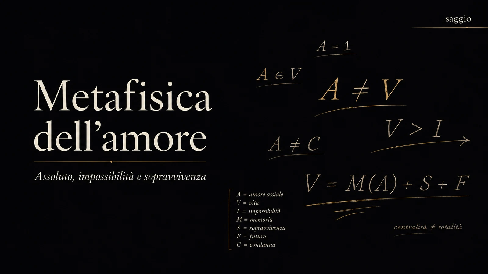
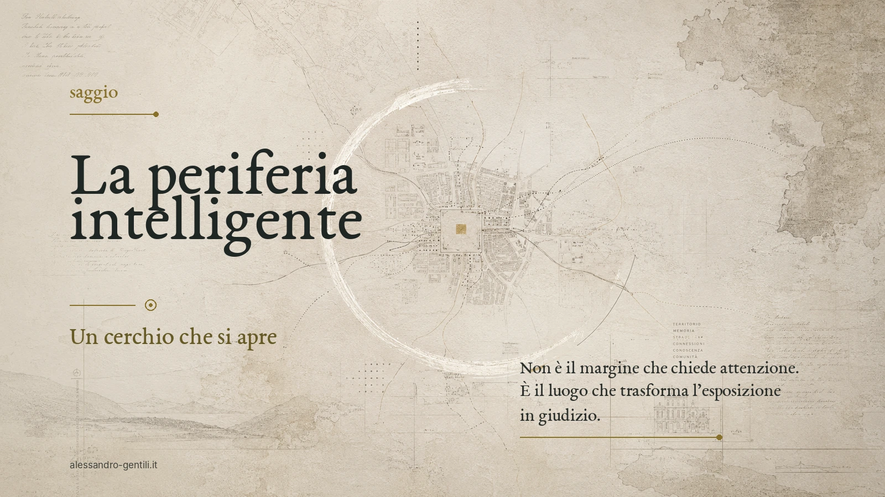
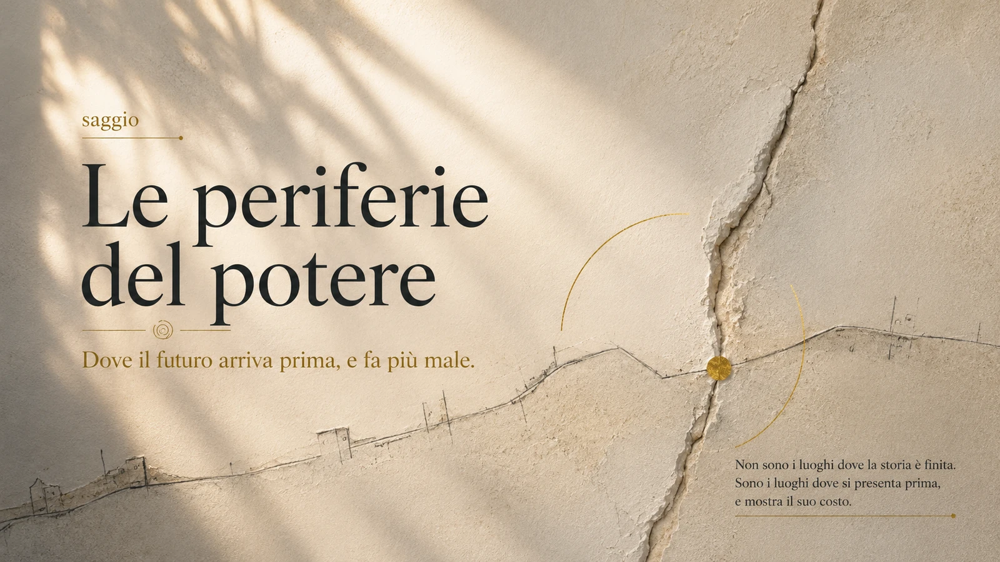
Dove il futuro arriva prima, e fa più male.
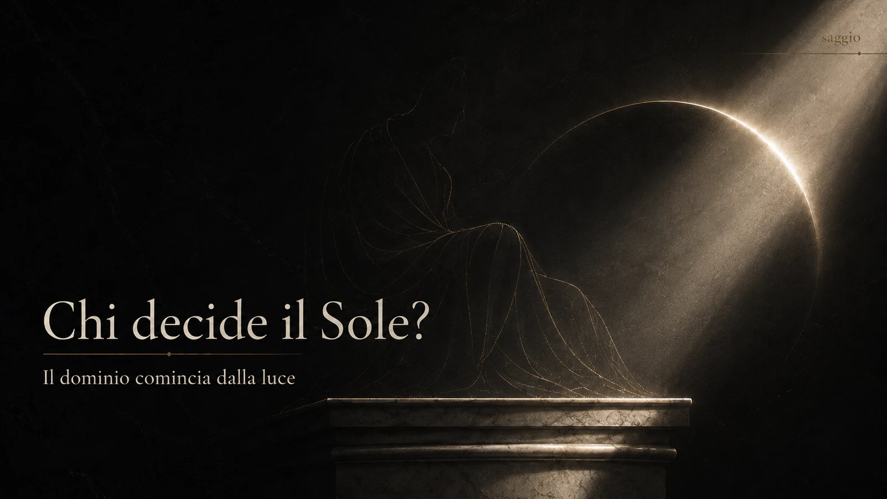
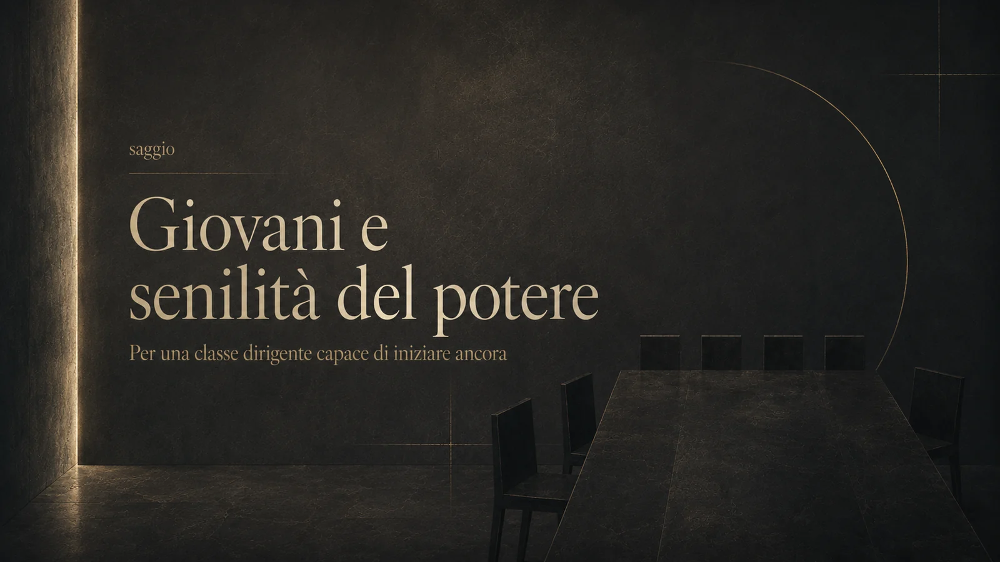
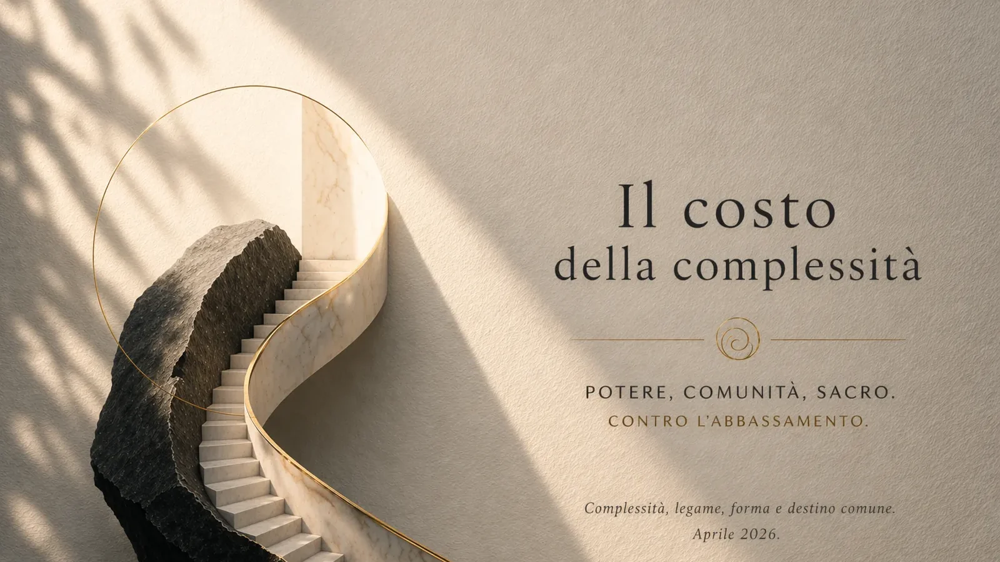
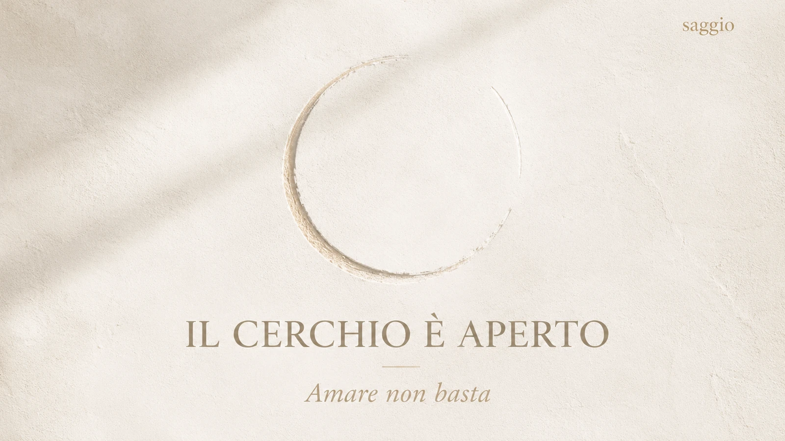
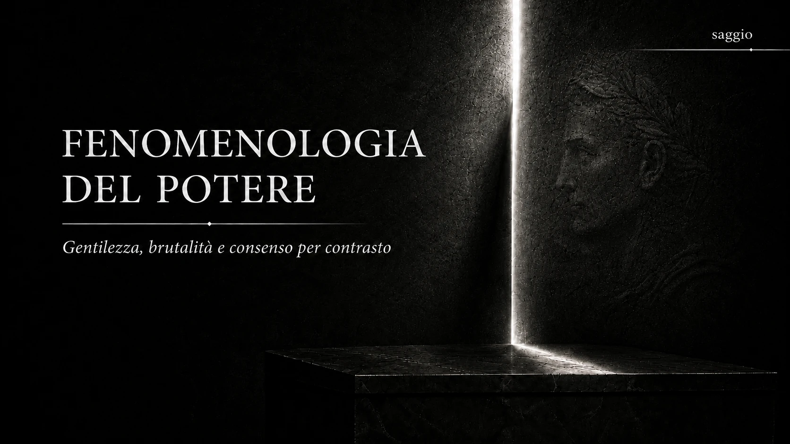
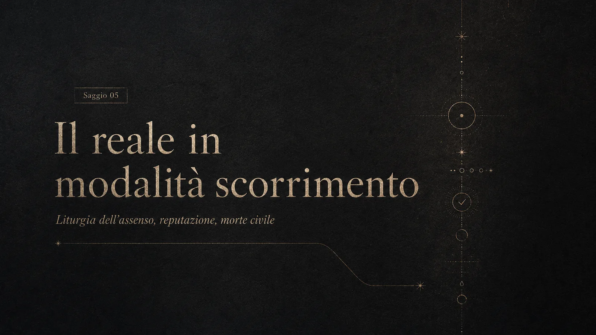
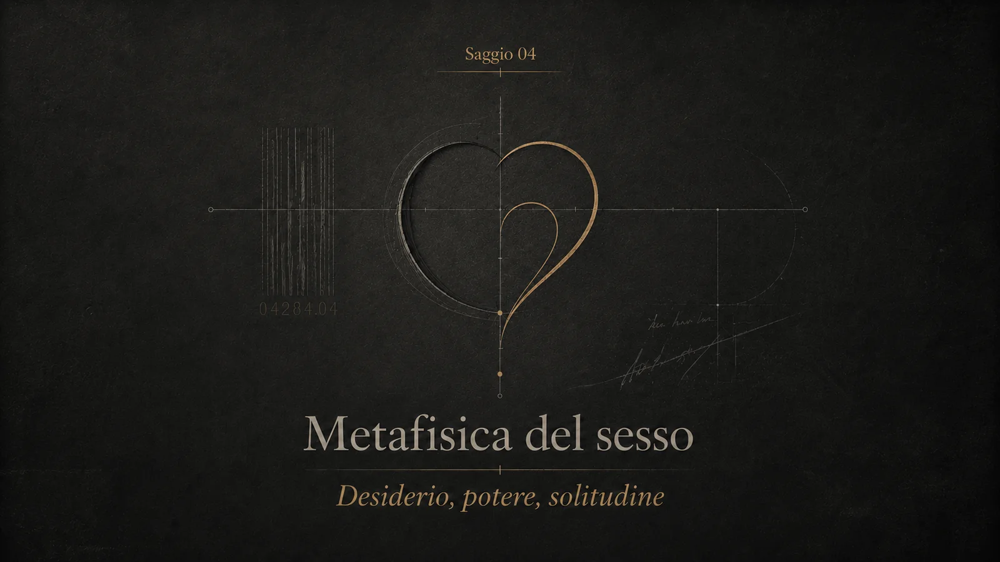
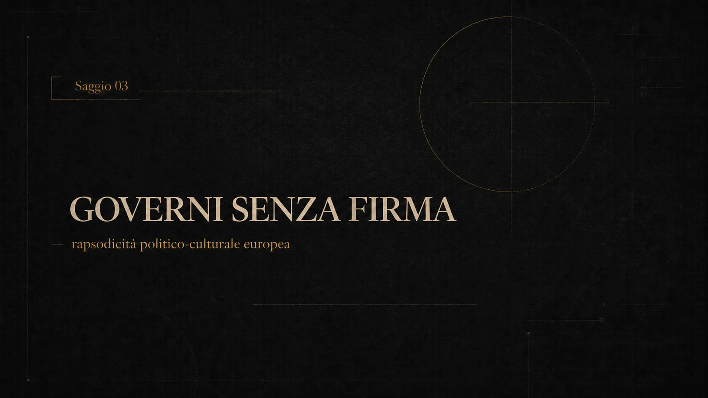
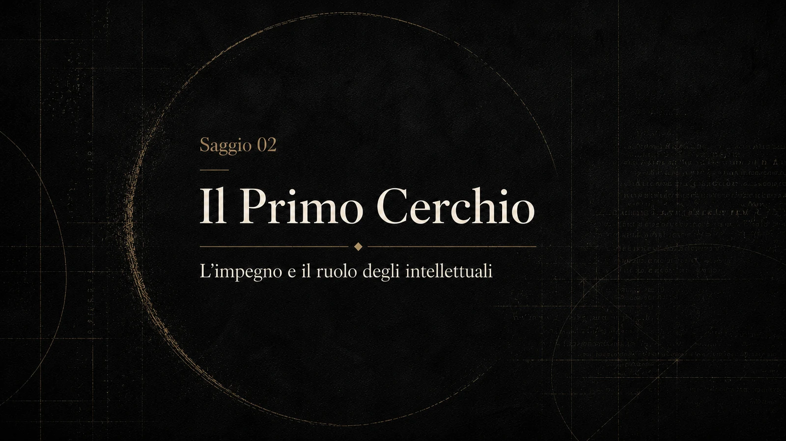
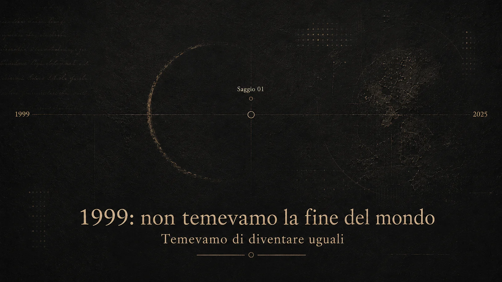
La paura non era che tutto finisse, ma che tutto diventasse compatibile.
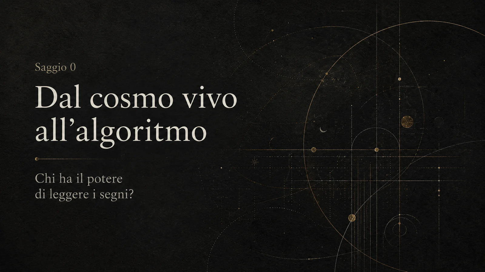
Un cammino filosofico da Platone a oggi nell’era dell’AI.
Read the argument in English alongside the original Italian essay.
Per ricevere i prossimi saggi, iscriviti alla Lettera periodica.